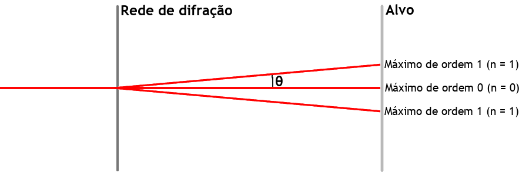

Análisar o fenómeno da difração da luz, e determinar o comprimento de onda da luz emitida por um laser.
A difração de uma onda ocorre quando esta encontra um obstáculo ou uma fenda. É definido pela mudança de direção das ondas em torno de um obstáculo ou através de uma fenda.
Este fenómeno é especialmente percetível quando a onda atravessa uma fenda com uma largura semelhante ao seu comprimento de onda.
Método
Primeiro, fazemos incidir o laser numa fenda de abertura variável, observando o padrão formado no alvo para diferentes aberturas. Depois, vamos colocando mais fendas entre o laser e o alvo, observando de que forma muda o padrão formado.
Ao fazermos incidir um feixe laser numa rede de difração, esse feixe será difratado, sendo observado um padrão de pontos luminosos num alvo onde se projeta a luz difratada.
No alvo irão ser visíveis vários pontos onde a intensidade da luz é máxima e outros onde esta é mínima.
A posição dos pontos no alvo é determinada pela expressão:
⇔n × λ = d × sin(θ)
Em que:
n é um número inteiro que indica a ordem
do máximo: n = 0 para o ponto
central; n = 1 para os máximos
mais próximos do central, etc.
λ é o comprimento de onda da luz.
d é a distância entre as fendas
da rede de difração.
θ é o ângulo entre a direção
perpendicular à rede e a direção correspondete a um máximo.
Como se mostra na imagem:

Para calcularmos d temos de saber quantas linhas por milímetro tem a rede utilizada. Sendo p o número de linhas por milímetro, sabemos que:
⇔ d =
1p
× 10-3 (em metros)
Podemos então calcular o comprimento da onda da luz monocromática que compõe o feixe laser fazendo as seguintes medições:
Usando os valores medidos, fazemos os seguintes cálculos:
⇔n × λ = d × sin(θ) ⇔
⇔ 1[1] × λ = d ×
cateto opostohipotenusa
⇔
⇔ λ = d ×
a√L2 + a2
[2]
[1]Vamos calcular o comprimento de onda com base no máximo de ordem 1, ou seja, n = 1.
[2]
O cateto oposto do triângulo retângulo que contém o ângulo θ será a, ou seja, a distância entre o máxmio de ordem 0 e o máximo de ordem 1 e o seu cateto adjacente será L, a distância entre a rede de difração e o alvo.